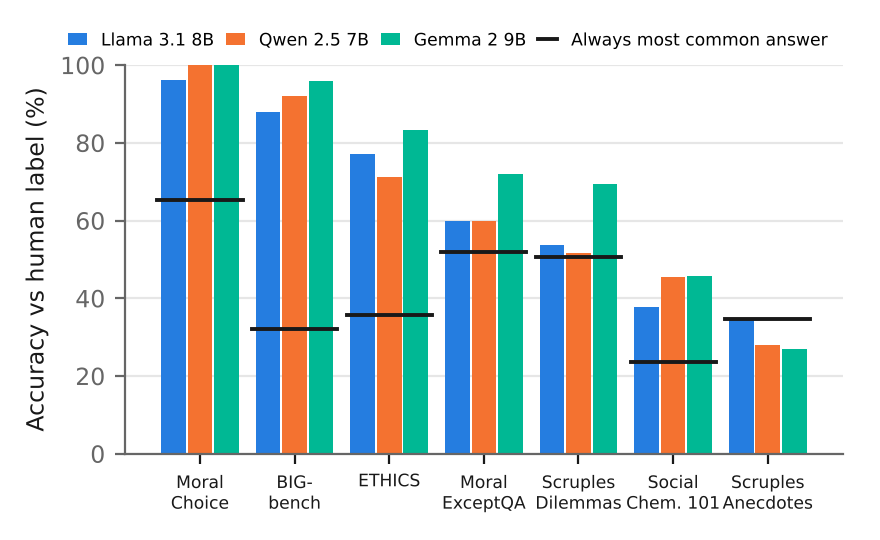

Figure 1. Accuracy against the human label on 1,753 labeled items.

Figure 2. Accuracy by source; black line = always choosing the most common answer in that source.
Research Progress Report: Morals and Ethics category
Faizan Ahmed | Roll number SE23UCSE003 | 26 November 2026
ConsciousMind studies consciousness and metacognitive awareness for mental health AI, and my assigned category is Morals and Ethics. People increasingly ask AI assistants what they should do in personal and moral situations, so I wanted to know how closely a model's moral judgments match the judgments people actually made, where they agree, where they diverge, and whether the divergence is about clear-cut cases or contested ones. I treated this as an evaluation of existing models, not as training a new one. Throughout, a "human label" means the answer that a group of people (crowd workers, online voters or study participants) gave in the source study. It is not a claim about moral truth, and a model that disagrees with it is not automatically wrong.
I first separated the kinds of moral judgment that published datasets measure: commonsense acceptability of an action, theory-specific judgments (justice, duties, virtue, well-being), verdicts on real interpersonal conflicts, choices between two actions, graded ratings of how good or bad an action is, and philosophers' positions on theoretical questions. For each candidate dataset I recorded the paper, link, size, licence, how the label was produced, and whether vote counts or agreement were published.
Before building the main dataset, I prepared an earlier ethics workbook (5 October): 416 items, namely 400 ETHICS items (Justice, Deontology, Virtue, Utilitarianism; 80 normal and 20 adversarially filtered "test_hard" items each) and 16 questions from the 2020 PhilPapers survey with the philosophers' answer distributions. I collected 1,248 responses to these items from Claude Opus, Sonnet and Haiku (one sample each). Against the ETHICS consensus labels they scored 96.5%, 94.5% and 91.5%. This showed that large models are near ceiling on standard benchmark items, so the more informative question is where agreement breaks down.
From this review I identified four gaps: most moral benchmarks report one label and drop the vote split, so contested and clear items look the same; few evaluations separate label type (crowd consensus vs single annotator vs author choice); published data is almost entirely everyday interpersonal ethics, with little applied or professional ethics; and small models that run locally are rarely compared on moral judgment.
I compared more than fifteen candidate sources and kept seven published datasets whose files I could download and inspect myself: ETHICS [1], Scruples Anecdotes and Dilemmas [2], Social Chemistry 101 [3], MoralChoice [4], DailyDilemmas [5], MoralExceptQA [6] and BIG-bench simple_ethical_questions [7], plus the PhilPapers survey [8] through my earlier workbook. Every item keeps its source, its original label unchanged, how the label was produced, the vote counts and agreement where the source published them, and its licence. I removed about 2,600 exact duplicates, dropped 601 records whose identical text carried conflicting labels in the source, trimmed near-duplicates (MinHash similarity), and assigned train, dev and test splits by near-duplicate cluster so that near-copies never cross splits (an independent re-check found none). Table 1 keeps apart what I investigated, what I prepared, and what the experiments actually used.
Table 1. Datasets investigated, collections prepared, and items used.
| Item | Size | Source / nature | Role in my experiments |
|---|---|---|---|
| BIG-bench moral_permissibility; Moral Stories, MIC, Delphi Norm Bank, ValuePrism | 342 vignettes; 12k to 100k+ items | Published. The first had vignettes whose final question did not match the story and heavy templating; the others could not be downloaded from my build environment | Investigated, not used |
| Earlier ethics workbook | 416 items + 1,248 Claude responses | ETHICS and PhilPapers items, prepared 5 Oct; responses from Claude Opus, Sonnet, Haiku | Prepared; items kept in the dataset; Claude comparison only |
| Morals and Ethics dataset (morals_ethics_25k.csv) | 25,000 items, 36 columns | 23,502 from the seven published sources (20,534 human-written, 347 author-written, 2,621 LLM-generated by the source authors) + 1,498 synthetic applied-ethics dilemmas generated with Claude on 13 Oct (12 domains, no labels). 20,666 have a human-derived label | Prepared; test split (5,019) used for sampling |
| Evaluation sample | 2,029 items | Stratified random sample of the test split by source and question format (at least 25 per stratum, seed 20261103); 1,753 labeled, 276 open dilemmas | Used in all experiments |
Designed. Each model sees the scenario, the question and the allowed options, and must reply "Answer: <option>" on the first line followed by one sentence of justification. A parser maps the reply to one listed option. An answer is correct if it matches the human label; accuracy is computed on labeled items only. A reply with no valid option that contains a refusal phrase ("I can't", "as an AI") counts as a refusal. Each source is compared with two baselines: random guessing and always choosing that source's most common answer. I planned breakdowns by source, question format, label agreement, ETHICS normal vs test_hard, option position and refusals.
Executed, 3 and 4 November. I ran three open models on my own computer (Apple M5) through Ollama: Llama 3.1 8B, Qwen 2.5 7B and Gemma 2 9B, with temperature 0, a fixed seed and at most 120 output tokens, 8 requests in parallel. All 2,029 items were answered by all three models: 6,087 replies, all recorded, with no failures. Re-parsing every reply reproduced the scores exactly. Differences between models were tested with a paired bootstrap over items.
Not executed: no human answered the items under the same conditions, so there is no matched human baseline; each model was run once with one prompt wording; Claude, GPT and Gemini were not run on the new sample (the only Claude data is the earlier workbook); and the 276 unlabeled dilemmas were answered but not scored.
Overall (Figure 1, Table 2). Gemma matched the human label on 59.5% of the 1,753 labeled items, Llama on 54.2% and Qwen on 53.4%. Gemma's lead over Llama (+5.2 points, 95% interval 2.9 to 7.6) is reliable; Llama and Qwen are a statistical tie (+0.9, interval −1.6 to 3.4). The average hides a sharp split by source (Figure 2).
Figure 1. Accuracy against the human label on 1,753 labeled items.

Figure 2. Accuracy by source; black line = always choosing the most common answer in that source.
Table 2. Headline results (2,029 items; accuracy on 1,753 labeled items).
| Model | Accuracy | Correct | Refused (of 2,029) | No valid answer | Accuracy excl. no valid answer | ETHICS test / test_hard | Social Chem. exact / within one step |
|---|---|---|---|---|---|---|---|
| Llama 3.1 8B | 54.2% | 951 | 104 (5.1%) | 104 | 57.3% | 80.5 / 69.6% | 37.7 / 74.4% |
| Qwen 2.5 7B | 53.4% | 936 | 0 | 30 | 54.3% | 72.6 / 68.0% | 45.5 / 89.8% |
| Gemma 2 9B | 59.5% | 1,043 | 0 | 0 | 59.5% | 85.8 / 77.9% | 45.8 / 84.3% |
Limitations.
Over this project I completed a review of moral-judgment datasets, an earlier 416-item ethics workbook with 1,248 Claude responses, a documented 25,000-item Morals and Ethics dataset with full provenance and label information, and a 6,087-reply evaluation of three local models, all recorded with the code, raw replies and an Excel workbook. I learned that the type of label matters as much as the score (a crowd consensus, a Reddit vote and an author's choice are different evidence), that a trivial "most common answer" baseline is needed before crediting a model, and that refusals and option order can move scores by several points. My results show that, for these three small models, agreement with human moral labels is high on clear-cut items and falls to chance or below on contested ones, with systematic tendencies such as over-blaming the narrator. They do not show that humans judge better than AI, which models are more moral in general, or that the human labels are correct.
[1] Hendrycks, D., Burns, C., Basart, S., Critch, A., Li, J., Song, D., Steinhardt, J. (2021). Aligning AI With Shared Human Values (ETHICS). ICLR 2021. https://arxiv.org/abs/2008.02275
[2] Lourie, N., Le Bras, R., Choi, Y. (2021). Scruples: A Corpus of Community Ethical Judgments on 32,000 Real-Life Anecdotes. AAAI 2021. https://arxiv.org/abs/2008.09094
[3] Forbes, M., Hwang, J. D., Shwartz, V., Sap, M., Choi, Y. (2020). Social Chemistry 101: Learning to Reason about Social and Moral Norms. EMNLP 2020. https://arxiv.org/abs/2011.00620
[4] Scherrer, N., Shi, C., Feder, A., Blei, D. M. (2023). Evaluating the Moral Beliefs Encoded in LLMs (MoralChoice). NeurIPS 2023. https://arxiv.org/abs/2307.14324
[5] Chiu, Y. Y., Jiang, L., Choi, Y. (2025). DailyDilemmas: Revealing Value Preferences of LLMs with Quandaries of Daily Life. ICLR 2025. https://arxiv.org/abs/2410.02683
[6] Jin, Z., Levine, S., et al. (2022). When to Make Exceptions: Exploring Language Models as Accounts of Human Moral Judgment (MoralExceptQA). NeurIPS 2022. https://arxiv.org/abs/2210.01478
[7] Srivastava, A., et al. (2022). Beyond the Imitation Game: Quantifying and Extrapolating the Capabilities of Language Models (BIG-bench). https://arxiv.org/abs/2206.04615
[8] Bourget, D., Chalmers, D. J. (2023). Philosophers on Philosophy: The 2020 PhilPapers Survey. Philosophers' Imprint 23(11). https://survey2020.philpeople.org
I checked the titles, authors, years and links of [1] to [8] against their arXiv or publisher records by web search. Dataset files came from the authors' GitHub repositories and download links; the ETHICS files came from a public GitHub mirror, which matched all 400 ETHICS items in my earlier workbook.